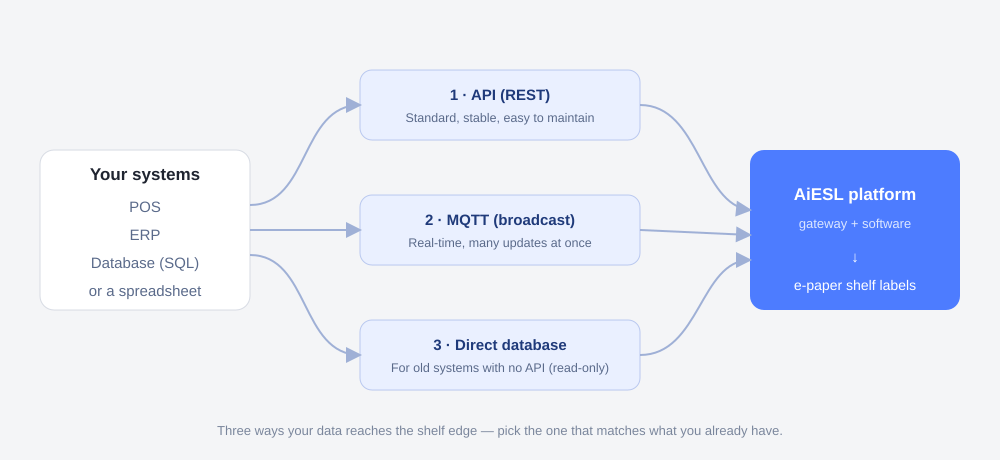

If a supplier has ever handed you a page full of “TCP, MQTT, REST API, POS, ERP” and left you more worried than before, this article is the antidote. You do not need to be technical to make a good decision here — you need to know what each term means for you, and what your side has to provide. For the broader picture of why open, documented connections matter, see our companion piece on open vs closed ESL systems; if you are new to the hardware itself, start with what electronic shelf labels are.
First, the Jargon in Plain English
Every one of these words describes a way for two systems to talk to each other — nothing more. Here is each term as a plain sentence plus an everyday analogy, so the rest of the article makes sense.
| Term | In plain English | Everyday analogy |
|---|---|---|
| POS | Your point-of-sale — the checkout system that knows every product and its price. | The cash register and its price book. |
| ERP | The bigger system that manages inventory, purchasing and stock behind the store. | The back-office brain. |
| Database | The place your product and price data is actually stored (often MySQL, SQL Server, etc.). | The master ledger in the stockroom. |
| API | A standard “service window” one system offers so another can ask it for data. | A waiter: you order, they fetch it from the kitchen. |
| MQTT | A lightweight broadcast channel: publish a change once and every subscriber hears it instantly. | A radio station: announce once, everyone tuned in receives it. |
| TCP | The low-level pipe the others run over — the plumbing beneath the API or MQTT. | The water pipes under the floor. |
Notice the pattern: POS, ERP and database are where your prices live; API, MQTT and TCP are how the data travels to the shelf. You care about the first group; a good supplier handles the second. Our note on open ESL platforms explains why insisting on documented, standard connections (an open API or MQTT rather than a closed, undocumented one) protects you for years.
Which Connection Is Right for Me?
You do not choose by the acronym — you choose by what you already have. Run down this short decision tree and you will land on the right path in under a minute.
| If you have… | Use… | Why |
|---|---|---|
| A modern POS/ERP that can expose an API | API (REST) | Stable, standard, easy to maintain — the default for most stores. |
| A need to push many price changes in real time | MQTT | Broadcast-style: one change reaches every label at once. |
| Only an old database and no API | Direct database link | We read your database directly, read-only (covered in detail below). |
| No system at all (spreadsheets, paper) | Our built-in back office | Manage products and prices in our software until you are ready to connect. |

A quick reassurance on the two that scare people most. An API is the simplest and most stable option for the majority of retailers: your systems exchange data in a clean, standard format, and it is easy to monitor and troubleshoot. MQTT is worth it when you change prices constantly and want them live instantly. If neither is available because your system is old, the database path below covers you — you are not stuck.
What Do I Need to Prepare for an API Integration?
An API integration is mostly about giving the label platform read access to your product data and telling it what your fields mean. Here is the short checklist most projects need:
- Read access to your product and price data — an API endpoint, or an export, or a database view. Read-only is enough.
- A field list — which columns hold SKU, product name, the price (or several prices), shelf location and stock.
- A test environment and a technical contact — someone (your IT or your POS/ERP vendor) who can answer questions and grant access.
- An update-frequency expectation — do prices need to reach the shelf in real time, or is a few times a day fine?
- Basic network and security conditions — whether outbound access is allowed, whether connections must use HTTPS, and any IP allowlist.
That is genuinely most of it. The heavy lifting — translating your data into what each label shows — is a one-time mapping the supplier does with you, not ongoing work for your team. And because the connection is read-only, it cannot alter what is in your POS or ERP; your system stays the single source of truth.
“I Only Have an Old Database” — Here’s Exactly How We Connect It
This is one of the most common situations, and it is fully supported: if all you have is an aging system with a database and no API, we connect to the database directly, read-only, and keep the labels in sync automatically. No one has to export a spreadsheet every morning. The setup has four clear steps.
Step 1 — Bring the base station online
The gateway (base station) is the small box that talks wirelessly to the labels. It is placed in the store, connected to your network, and registered to the management software. Once it is online, it is ready to receive the product data and push it to the tags. Nothing about this touches your database yet — it is just the delivery hardware coming up.
Step 2 — Read your product data (the “metadata”)
We point the integration at your database with a read-only account. “Metadata” here just means your product records — codes, names, prices, locations, stock. We read them; we never write back. Your database remains exactly as it is, and it stays the single source of truth for every price.
Step 3 — Map your columns to the label fields
Your database uses its own column names; the label system has its own fields. So we agree a one-time mapping — a simple table saying “this column of yours is the price, that one is the product name,” and so on. A sanitized example (your real column names will differ):
| Your database column | → | Label field |
|---|---|---|
| product_code | → | item code |
| product_name | → | name |
| retail_price | → | price field 1 |
| member_price | → | price field 2 |
| shelf_location | → | location |
| tag_id | → | label ID |
| template | → | label template |
Illustrative mapping only — the exact fields are agreed with you once, then reused automatically. It is set up a single time, then it just runs.
Step 4 — Detect changes automatically
The final piece is what makes it feel automatic: instead of re-reading your whole database on a timer, the integration watches your database’s own change log. Every serious database keeps a running record of what changed (in MySQL this is the binary log; other databases have equivalents). When a price is edited in your system, that change appears in the log within moments, the integration picks it up, and the matching shelf label refreshes — no export, no manual step, no delay you would notice. Change a price in the system you already use, and the shelf follows on its own.
That is the whole legacy-database path: gateway online, read the data, map it once, watch for changes. It is the same outcome as a modern API integration, reached from a starting point of “we only have an old database.”
Is It Stable, Secure and Simple?
Those three worries — will it stay reliable, is my data safe, and is this going to be hard — are exactly the right questions. Straight answers:
| Concern | How a good integration handles it |
|---|---|
| Stable | Mature, standard protocols; the gateway keeps running and re-syncs automatically after a network drop, so a brief outage does not scramble shelf prices. Reliability at the label level is helped by long battery life and low-power design. |
| Secure | Read-only access, encrypted connections, and — importantly — your data stays in your own stack. The platform mirrors your system rather than taking it over, which is the whole point of an open, non-lock-in approach. On-premises deployment is available where policy requires it. |
| Simple | The one hard part — field mapping — is done once, with you, by the supplier. After that it runs automatically. Compare that with building it yourself, which typically takes about a year. |
The security point deserves emphasis because it is where non-technical buyers feel most exposed: a correctly built ESL integration never writes back to your POS, ERP or database. It reads, it mirrors, it displays. If a supplier cannot clearly confirm that access is read-only and your data stays yours, treat that as a warning sign — the same signal we flag in our vendor comparison guide.
Putting It Together
Step back and the picture is simple. Your prices already live in a POS, an ERP or a database. An electronic shelf label platform reads that data — through an API, MQTT, or a direct database link, whichever matches what you have — and shows it on the shelf, updating automatically when you change a price. It does not replace your systems, it does not write to them, and it does not require you to understand the plumbing. Once the labels are connected, the same shelf edge can also power AI-driven pricing and automatic markdowns — but that is a later chapter; connection comes first.
Not sure which path fits your setup? Book an integration assessment call — tell us what system you run (POS, ERP, or just a database) and we will map out exactly how it would connect, what to prepare, and how long it would take. You can also see the hardware or explore the open middleware behind it.